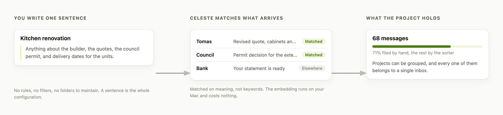
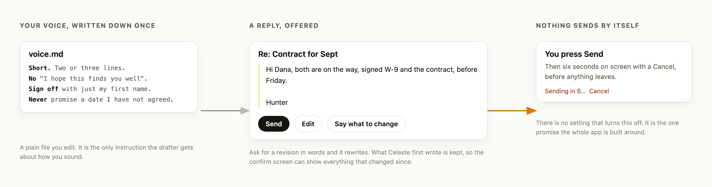
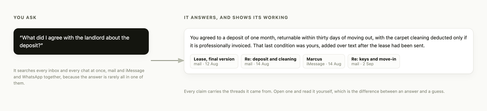

Demo
On a phone, drag a picture sideways, or tap it to open it full size
It files, from one sentence
Describe a project in plain words. Matching is on meaning, and runs on your Mac

It drafts, and waits for you
In a voice you wrote down. Six seconds with a Cancel before anything leaves

It answers, with receipts
One question across every inbox and chat, and the threads it came from

It reads your own habits back
When you write, how fast you answer, who you keep waiting. Counts you can check, not advice
![Four panels. On the left, a bar for every hour of the day, what you sent against what arrived, peaking at 22:00. Then the middle reply wait, 31 minutes on chats and 3.9 hours on mail, with the share of conversations you opened and the threads that end with you. Then four people with a track showing who out-waits whom, how many words each writes, and whether the last 90 days are up or down. On the right, your own writing read back month by month, and a personality type tested over five runs with the message each axis cites.](assets/stats-light.png)